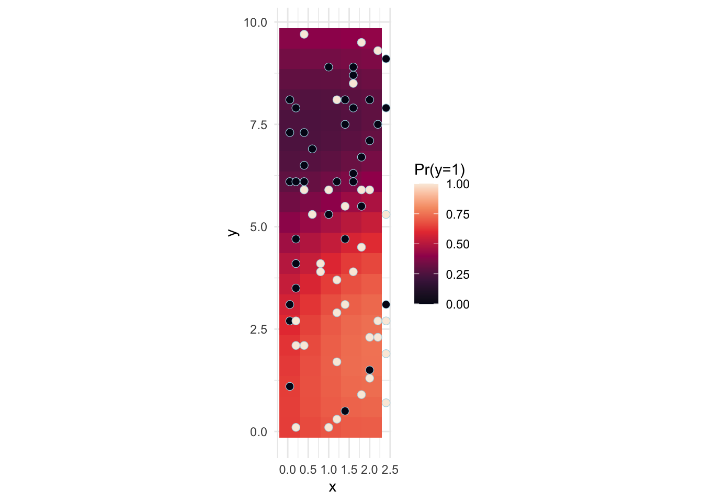

Michael Betancourt has an extremely detailed, very rigous tutorial on GPs
Here’s a complete, worked analysis of human birthdays by world-class statisticians (Gelman, Vehtari, Simpson, et al)
GPs are related to GAMs and can be represented by a collection of basis functions. This is approximate but much much faster. See this excellent tutorial by Aki Vehtari, and the corresponding paper (citation in the blog post).
Let’s begin by (once again!) loading and reorganizing the mite data. This time we’ll also use mite.xy, which gives the coordinates of each one of the 70 samples.
# today we need to do the data(mite, package ="vegan")data("mite.env", package ="vegan")data("mite.xy", package ="vegan")library(tidyverse)library(cmdstanr)
This is cmdstanr version 0.7.1
- CmdStanR documentation and vignettes: mc-stan.org/cmdstanr
- CmdStan path: /home/andrew/software/cmdstan
- CmdStan version: 2.34.1
# combine data and environmentmite_data_long <-bind_cols(mite.env, mite) |>mutate(plot_id =1:length(WatrCont)) |>pivot_longer(Brachy:Trimalc2, names_to ="spp", values_to ="abd")mite_data_long_transformed <- mite_data_long |>mutate(presabs =as.numeric(abd>0),# center predictorswater = (WatrCont -mean(WatrCont)) /100 )# pick a species that has about 50/50 chance mite_data_long_transformed |>group_by(spp) |>summarize(freq =mean(presabs)) |>filter(freq > .4& freq < .6)
Let’s choose just one species as an example. I’ve chosen one where the relationship with water is rather strong, and for which presence and absence are roughly balanced. This is just to make the example clear.
// Fit the hyperparameters of a latent-variable Gaussian process with an// exponentiated quadratic kernel and a Bernoulli likelihood// This code is from https://github.com/stan-dev/example-models/blob/master/misc/gaussian-process/gp-fit-logit.standata {int<lower=1> Nobs;int<lower=1> N;array[N] real x;array[Nobs] int<lower=0, upper=1> z;}transformed data {real delta = 1e-9;}parameters {real<lower=0> rho;real<lower=0> alpha;real a;vector[N] eta;}transformed parameters {vector[N] f; {matrix[N, N] L_K;matrix[N, N] K = gp_exp_quad_cov(x, alpha, rho);// diagonal elementsfor (n in1 : N) { K[n, n] = K[n, n] + delta; } L_K = cholesky_decompose(K); f = L_K * eta; }}model { rho ~ inv_gamma(5, 14); alpha ~ normal(0, .8); a ~ normal(0, .2); eta ~ std_normal(); z ~ bernoulli_logit(a + f[1:Nobs]);}
We need to generate data for making predictions! I’ll create a new vector of observations called new_x that cover the range of the water variable in our dataset.
# sample N values on the range of xnew_x <-seq(from =-3, to =5, length.out =15)# put them on the dataframegp_example_samp <- gp_example_pred$sample(data =list(N =length(pwil_spatial$presabs) +length(new_x),Nobs =length(pwil_spatial$presabs),x =c(pwil_spatial$water, new_x),z = pwil_spatial$presabs),chains =2, parallel_chains =2, refresh =1000)gp_example_samp$save_object("topics/04_gp/gp_example_samp_pwil.rds")
Tip
Note that cmdstanr models have a method called $save_object(), which lets you save the model outputs into an .rds object.
# sample N values on the range of xnew_x <-seq(from =-3, to =5, length.out =15)gp_example_samp_pwil <-read_rds("topics/04_gp/gp_example_samp_pwil.rds")water_prediction_points <- gp_example_samp_pwil |> tidybayes::gather_rvars(f[rownum]) |>slice(-(1:length(pwil_spatial$presabs)))water_prediction_points |>mutate(water = new_x,presabs = posterior::rfun(plogis)(.value)) |>ggplot(aes(x = water, dist = presabs)) + tidybayes::stat_lineribbon() +# scale_fill_viridis_d(option = "rocket") + scale_fill_brewer(palette ="Reds", direction =-1) +geom_jitter(aes(x = water, y = presabs), inherit.aes =FALSE, height = .01, width =0,data = pwil_spatial)
ggsave("topics/04_gp/pwil_water.png")
Saving 7 x 5 in image
We can also pull out some specific functions. What I want you to see here is that there are MANY curvy lines that are consistent with this model.
some_predicted_lines <- gp_example_samp_pwil |># take just some draws tidybayes::spread_draws(a, f[rownum], ndraws =63) |># remove the rows that match observed data,# and look only at the points for predictions.filter(rownum >length(pwil_spatial$presabs)) |># convert to probabilitymutate(prob =plogis(f + a),rownum = rownum -70) |>## need a dataframe that says which "rownum" from ## above goes with which value of water from the## new_x vector I made:left_join(tibble::enframe(new_x,name ="rownum", value ="water"))
Joining with `by = join_by(rownum)`
some_predicted_lines |>ggplot(aes(x = water, y = prob, group = .draw)) +geom_line(alpha =0.7) +theme_minimal() +coord_cartesian(ylim =c(0, 1))
Spatial predictions
To make a prediction of a function on one X variable, we needed a sequence of points to predict along.
To make spatial predictions, we need a grid of points to predict along.
grid_points <- modelr::data_grid(mite.xy, x = modelr::seq_range(x, by = .5),y = modelr::seq_range(y, by = .5)) grid_points |>ggplot(aes(x = x, y = y)) +geom_point() +coord_fixed()

Other than a change in the data {} block, the Stan code is unchanged!
CAUTION: Slow
The model below, over 70 points, is the slowest model we’ve seen so far and takes about 7 minutes on my (Andrew’s) laptop.
gp_example_2D_samp_pwil <-read_rds("topics/04_gp/gp_example_2D_samp_pwil.rds")## extract the predictorsgp_example_2D_samp_pwil |> tidybayes::spread_rvars(f[rownum], a) |>slice(-(1:length(pwil_spatial$presabs))) |>bind_cols(grid_points) |>mutate(presabs = posterior::rfun(plogis)(f + a),pa_median =median(presabs)) |>ggplot(aes(x = x, y = y, fill = pa_median)) +geom_tile()+geom_point(aes(x = x,y = y,fill = presabs),inherit.aes =FALSE,data = pwil_spatial,pch =21 ,size =2.5,stroke = .3,colour ="lightblue" ) +scale_fill_viridis_c(option ="rocket") +coord_fixed()+theme_minimal() +labs(fill ="Pr(y=1)") +NULL
# ggsave("topics/04_gp/pwil_spatial.png")
Extensions:
Add water to the model. Does the spatial effect disappear, increase, or stay kind of the same?
Next step: try to model water curve for more than one species. Would it be possible to make the species rho parameters hierarchical?
Source Code
---title: "Gaussian Processes in Stan"description: | Smooth lines in fancy colours.execute: freeze: truecomments: hypothesis: trueformat: html: code-tools: trueeditor_options: chunk_output_type: console---:::{.callout-tip}## Goals of this lesson1. Let's appreciate together the power of online community resources1. Gaussian Processes are families of smooth functions we learn from data1. When used for prediction, a GP is both a "prior" and a "likelihood":::## Background readingGaussian processes are very common, and there are lots of resources on the topic:1. The Stan manual [has a chapter on it](https://mc-stan.org/docs/stan-users-guide/gaussian-processes.html)1. The Stan team gives lots of [example models on Github](https://github.com/stan-dev/example-models/blob/master/misc/gaussian-process/gp-fit-logit.stan) which I adapted for this example.1. Michael Betancourt has an extremely detailed, very rigous [tutorial on GPs](https://betanalpha.github.io/assets/case_studies/gaussian_processes.html#3_Inferring_A_Gaussian_Process)1. Here's a complete, worked [analysis of human birthdays](https://avehtari.github.io/casestudies/Birthdays/birthdays.html#Model_4:_long_term_smooth_+_seasonal_+_weekday_with_increasing_magnitude) by world-class statisticians (Gelman, Vehtari, Simpson, et al)1. GPs are related to GAMs and can be represented by a collection of basis functions. This is approximate but much much faster. See this [excellent tutorial](https://avehtari.github.io/casestudies/Motorcycle/motorcycle_gpcourse.html#45_GP_with_basis_functions_for_f_and_g) by Aki Vehtari, and the corresponding paper (citation in the blog post).1. this [blog](https://rpubs.com/NickClark47/stan_geostatistical) applies GPs to spatial count data1. Here is a very long and wonderfully detailed post describing a GP approach to [occupany modelling](https://peter-stewart.github.io/blog/gaussian-process-occupancy-tutorial/)1. Another [blog on Gaussian Processes](https://brendanhasz.github.io/2018/10/10/hmm-vs-gp.html#generating-data-from-a-gaussian-process), Hidden Markov Models and more, very clear explanation.<!-- add equation --><!-- add simulation -->### Reorganizing the mite dataLet's begin by (once again!) loading and reorganizing the mite data. This time we'll also use `mite.xy`, which gives the coordinates of each one of the 70 samples.#### Loading models and data```{r setup}suppressPackageStartupMessages(library(dplyr))library(ggplot2)library(tidyr)# library(cmdstanr)suppressPackageStartupMessages(library(rstan))rstan_options("auto_write" = TRUE)options(mc.cores = parallel::detectCores())library(tidybayes)data(mite, package = "vegan")data("mite.env", package = "vegan")## ALSO: the spatial data``````{r reorganize-mites-again}# combine data and environmentmite_data_long <- bind_cols(mite.env, mite) |> mutate(plot_id = 1:length(WatrCont)) |> pivot_longer(Brachy:Trimalc2, names_to = "spp", values_to = "abd")mite_data_long_transformed <- mite_data_long |> mutate(presabs = as.numeric(abd>0), # center predictors water = (WatrCont - mean(WatrCont)) / 100 )# pick a species that has about 50/50 chance mite_data_long_transformed |> group_by(spp) |> summarize(freq = mean(presabs)) |> filter(freq > .4 & freq < .6)## how about: PWIL ```Let's choose just one species as an example. I've chosen one where the relationship with water is rather strong, and for which presence and absence are roughly balanced. This is just to make the example clear.```{r}#| fig-cap: Probability of occurrance of one mite species, as a fuction of water content of the soilpwil_data <- mite_data_long_transformed |>filter(spp =="PWIL")pwil_data |>ggplot(aes(x = water, y = presabs)) +geom_point() +stat_smooth(method = glm, method.args =list(family ="binomial")) +theme_minimal()``````{r}#| fig-cap: Presence-absence data for mite species "PWIL", at the spatial location of each point.# add the spatial coordinates:pwil_spatial <-bind_cols(pwil_data, mite.xy)pwil_spatial |>ggplot(aes(x = x, y = y, fill =as.factor(presabs))) +geom_point(size =3, pch =21, stroke =1) +scale_fill_brewer(type ="qual", palette ="Dark2") +theme_minimal() +coord_fixed() +labs(fill ="Pres/Abs")```We'll look at two possibilities in turn: 1. A nonlinear function of one variable1. A smooth function of distance# Smooth function of one variable## Write the model$$\begin{align}\mathsf{Pr}(y_i = 1) &\sim \mathsf{Bernoulli}(p_i)\\\mathsf{logit}(p_i) &= a + f_i\\f_i &\sim \mathsf{multivariate\ normal}(0, K(x | \theta)) \\ K(x | \alpha, \rho, \sigma)_{i, j}&= \alpha^2\exp \left(- \dfrac{1}{2 \rho^2} \sum_{d=1}^D (x_{i,d} - x_{j,d})^2\right)+ \delta_{i, j} \sigma^2,\end{align}$$That's the general notation for D dimensions. In our case we're looking at something much simpler.$$\begin{align}\mathsf{Pr}(y_i = 1) &\sim \mathsf{Bernoulli}(p_i)\\\mathsf{logit}(p_i) &= a + f_i\\f_i &\sim \mathsf{Multivariate\ Normal}(0, K(x | \theta)) \\ K(x | \alpha, \rho, \sigma)_{i, j}&= \alpha^2\exp \left(- \frac{(\text{water}_i - \text{water}_j)^2}{2 \rho^2} \right)+ \delta_{i, j} \sigma^2 \\\rho &\sim \mathsf{Inverse\ Gamma}(5, 14) \\\alpha &\sim \mathsf{Normal}(0, .8) \\a &\sim \mathsf{Normal}(0, .2) \\\end{align}$$## Simulate to understand it```{r}#| class-output: stangp_example_sim <-cmdstan_model(stan_file ="topics/04_gp/gp_example_sim.stan")gp_example_sim``````{r, eval=FALSE}gp_example_sim_samples <- gp_example_sim$sample(data = list( N = 20, x = seq(from = -3, to = 5, length.out = 20)), refresh = 200, chains = 1, iter_sampling = 200)gp_example_sim_samples$save_object( file = "topics/04_gp/gp_example_sim_samples")``````{r}gp_example_sim_samples <-read_rds("topics/04_gp/gp_example_sim_samples")x_value_df <-enframe(x =seq(from =-3, to =5, length.out =20),name ="i", value ="water")gp_example_sim_samples |> tidybayes::spread_draws(f[i], a, ndraws =45) |>left_join(x_value_df) |>ggplot(aes(x = water, y =plogis(f + a), group = .draw)) +geom_line() +coord_cartesian(ylim =c(0, 1))```## Express that model in code```{r}#| class-output: stangp_example_pred <-cmdstan_model(stan_file ="topics/04_gp/gp_example_pred.stan")gp_example_pred```We need to generate data for making predictions! I'll create a new vector of observations called `new_x` that cover the range of the `water` variable in our dataset.```{r eval=FALSE}# sample N values on the range of xnew_x <- seq(from = -3, to = 5, length.out = 15)# put them on the dataframegp_example_samp <- gp_example_pred$sample( data = list(N = length(pwil_spatial$presabs) + length(new_x), Nobs = length(pwil_spatial$presabs), x = c(pwil_spatial$water, new_x), z = pwil_spatial$presabs), chains = 2, parallel_chains = 2, refresh = 1000)gp_example_samp$save_object("topics/04_gp/gp_example_samp_pwil.rds")```:::{.callout-tip}Note that `cmdstanr` models have a method called `$save_object()`, which lets you save the model outputs into an `.rds` object.:::```{r eval=TRUE}# sample N values on the range of xnew_x <- seq(from = -3, to = 5, length.out = 15)gp_example_samp_pwil <- read_rds( "topics/04_gp/gp_example_samp_pwil.rds")water_prediction_points <- gp_example_samp_pwil |> tidybayes::gather_rvars(f[rownum]) |> slice(-(1:length(pwil_spatial$presabs)))water_prediction_points |> mutate(water = new_x, presabs = posterior::rfun(plogis)(.value)) |> ggplot(aes(x = water, dist = presabs)) + tidybayes::stat_lineribbon() + # scale_fill_viridis_d(option = "rocket") + scale_fill_brewer(palette = "Reds", direction = -1) + geom_jitter(aes(x = water, y = presabs), inherit.aes = FALSE, height = .01, width = 0, data = pwil_spatial)ggsave("topics/04_gp/pwil_water.png")```<!--  -->We can also pull out some specific functions. What I want you to see here is that there are MANY curvy lines that are consistent with this model.```{r}some_predicted_lines <- gp_example_samp_pwil |># take just some draws tidybayes::spread_draws(a, f[rownum], ndraws =63) |># remove the rows that match observed data,# and look only at the points for predictions.filter(rownum >length(pwil_spatial$presabs)) |># convert to probabilitymutate(prob =plogis(f + a),rownum = rownum -70) |>## need a dataframe that says which "rownum" from ## above goes with which value of water from the## new_x vector I made:left_join(tibble::enframe(new_x,name ="rownum", value ="water"))some_predicted_lines |>ggplot(aes(x = water, y = prob, group = .draw)) +geom_line(alpha =0.7) +theme_minimal() +coord_cartesian(ylim =c(0, 1))```# Spatial predictionsTo make a prediction of a function on one X variable, we needed a sequence of points to predict along. To make spatial predictions, we need a _grid_ of points to predict along.```{r}grid_points <- modelr::data_grid(mite.xy, x = modelr::seq_range(x, by = .5),y = modelr::seq_range(y, by = .5)) grid_points |>ggplot(aes(x = x, y = y)) +geom_point() +coord_fixed()```Other than a change in the `data {}` block, the Stan code is unchanged! ### Prior predictive simulations```{r}#| class-output: stangp_example_2D_prior <-cmdstan_model(stan_file ="topics/04_gp/gp_example_2D_prior.stan")gp_example_2D_prior``````{r}gp_example_2D_prior_samp <- gp_example_2D_prior$sample(data =list(N =nrow(grid_points),x = grid_points),chains =2, parallel_chains =2, refresh =1000)```### visualize the prior```{r}## extract the predictorsgp_example_2D_prior_samp |> tidybayes::spread_draws(f[rownum], a, ndraws =6) |>mutate(rownum =as.character(rownum)) |>left_join(grid_points |> tibble::rownames_to_column("rownum"), by =join_by(rownum)) |>mutate(presabs =plogis(f + a)) |>ggplot(aes(x = x, y = y, fill = presabs)) +geom_tile()+scale_fill_viridis_c(option ="rocket") +coord_fixed()+theme_minimal() +labs(fill ="Pr(y=1)") +facet_wrap(~.draw) +NULL```:::{.callout-warning}## CAUTION: SlowThe model below, over 70 points, is the slowest model we've seen so far and takes about 7 minutes on my (Andrew's) laptop.:::```{r}#| class-output: stangp_example_pred_2D <-cmdstan_model(stan_file ="topics/04_gp/gp_example_pred_2D.stan")gp_example_pred_2D```plot the effect in space:```{r, eval=FALSE}## sample the modelgp_example_2D_samp <- gp_example_pred_2D$sample( data = list(N = length(pwil_spatial$presabs) + nrow(grid_points), Nobs = length(pwil_spatial$presabs), x = bind_rows(pwil_spatial[c("x", "y")], grid_points), z = pwil_spatial$presabs), chains = 2, parallel_chains = 2, refresh = 1000)gp_example_2D_samp$save_object("topics/04_gp/gp_example_2D_samp_pwil.rds")``````{r}gp_example_2D_samp_pwil <-read_rds("topics/04_gp/gp_example_2D_samp_pwil.rds")## extract the predictorsgp_example_2D_samp_pwil |> tidybayes::spread_rvars(f[rownum], a) |>slice(-(1:length(pwil_spatial$presabs))) |>bind_cols(grid_points) |>mutate(presabs = posterior::rfun(plogis)(f + a),pa_median =median(presabs)) |>ggplot(aes(x = x, y = y, fill = pa_median)) +geom_tile()+geom_point(aes(x = x,y = y,fill = presabs),inherit.aes =FALSE,data = pwil_spatial,pch =21 ,size =2.5,stroke = .3,colour ="lightblue" ) +scale_fill_viridis_c(option ="rocket") +coord_fixed()+theme_minimal() +labs(fill ="Pr(y=1)") +NULL# ggsave("topics/04_gp/pwil_spatial.png")```<!--  -->## Extensions:Add water to the model. Does the spatial effect disappear, increase, or stay kind of the same?Next step: try to model water curve for more than one species. Would it be possible to make the species rho parameters hierarchical?